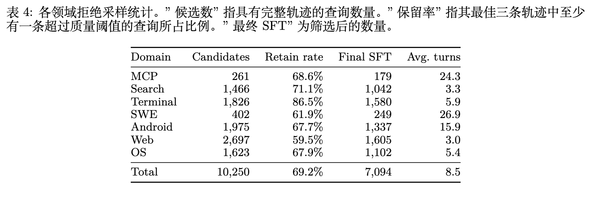

Paper-sharing-2: 智能体环境合成的三条技术路线
本次 Sharing 核心视角：从「环境构建」切入，对比三条技术路线——世界模型（Qwen-AgentWorld）、程序合成真实环境（CLI-Universe）、真实挖掘+自进化（Agent-World）。重点拆解每篇的数据合成 Pipeline，看它们是如何解决「智能体训练环境不足」这个核心问题的。
一、为什么「环境」是智能体的核心问题？
智能体的本质是一个交互循环：观察 → 决策 → 行动 → 环境反馈 → 再观察。在这个循环中，策略（Policy）和环境（Environment）是两个核心组件。
但当前 LLM 智能体研究几乎全部聚焦于「策略」侧（状态→动作），而忽略了「环境」侧（状态+动作→下一状态）。
痛点一：贵
搭建沙箱、Docker、GUI 虚拟机成本高
痛点二：少
手工设计的基准任务数量有限，覆盖场景有限
痛点三：不可控
难以系统性生成边缘情况，难以精确控制难度
今天我们看三篇论文，代表了三种不同的环境构建思路：
| 路线 | 代表论文 | 环境类型 | 核心思想 | 验证方式 |
|---|---|---|---|---|
| 模型模拟 | Qwen-AgentWorld | LWM 语言世界模型 | 用大模型「学会」环境动力学，直接生成下一状态 | LLM 评判 + 部分规则验证 |
| 程序合成 | CLI-Universe | Docker 真实环境 | 用 LLM 设计任务蓝图 + 程序验证，构建高质量真实环境 | 100% 可执行验证 |
| 真实挖掘+自进化 | Agent-World | 真实数据库+工具 | 从真实世界挖掘环境，再通过自进化闭环持续扩展 | 可执行验证 + 难度进化 |
二、路线一：世界模型（Qwen-AgentWorld）
2.1 核心思想
语言世界模型（Language World Model, LWM）是一个条件文本生成器，给定交互历史和当前智能体动作，预测下一个环境观测：
$o_{t+1} = f_\theta(c, o_{\leq t}, a_{\leq t})$
覆盖 7 个领域：MCP、Search、SWE、Terminal、Android、Web、OS。
对于 GUI 领域（Android、Web、OS），环境观测用可访问性树（accessibility trees）和 UI 视图层级表示，而非像素帧，使得文本模型可以直接处理。
2.2 数据合成 Pipeline：三阶段训练
核心理念：CPT 注入，SFT 激活，RL 锐化
2.2.1 数据来源（三个互补来源）
- 专用智能体基础设施：部署容器化执行沙箱、MCP 服务器、持久终端会话；GUI 领域部署持久 Android、浏览器、桌面 OS 环境。自动合成任务查询，让智能体系统端到端执行。这是可扩展、可控、可复现交互数据的主要来源。
- 开放环境交互轨迹：从公共来源收集自然发生的动作-环境交互轨迹（终端会话录制、开源智能体工具调用日志、代码仓库中的执行轨迹）。构建多智能体清洗流水线：专门的智能体分别处理获取、去噪、分段、语义对齐和质量评分。只有通过所有阶段的序列才进入训练池。
- 内部智能体轨迹：从日常模型开发中积累的内部基础模型 SFT 智能体轨迹，覆盖所有七个领域。
注意：三个阶段的数据池是严格不相交的。CPT 数据来自专用基础设施、开放交互轨迹和专业领域知识语料；SFT 和 RL 仅来自内部积累的轨迹。整体训练使用了超过 10M+ 条环境交互轨迹。
2.2.2 数据量统计
| 领域 | SFT 数量 | RL 训练数量 | 平均 token 数 | 平均轮数 |
|---|---|---|---|---|
| MCP | 179 | 4,156 | 62,702 | 28.9 |
| Search | 1,042 | 20,004 | 18,873 | 6.2 |
| Terminal | 1,580 | 34,125 | 5,805 | 12.0 |
| SWE | 249 | 8,181 | 36,734 | 24.7 |
| Android | 1,337 | 11,498 | 30,064 | 19.3 |
| Web | 1,605 | 8,716 | 19,417 | 10.2 |
| OS | 1,102 | 5,628 | 25,439 | 12.4 |
| 总计 | 7,094 | 92,308 | 19,443 | 13.4 |
2.2.3 统一数据处理 Pipeline
重试循环跳过（Retry-Cycle Skipping）：智能体经常陷入「垃圾输出→错误→重试」循环。简单删除这些轮会破坏状态链。方法是跳过有问题的（用户，助手）对，同时保留当前状态，使下一个有效轮继承正确的历史。
无变化轮过滤（GUI 领域）：移除动作前后状态没有有效变化的轮（通常由系统响应慢或网络延迟导致）。如果保留，这些样本会教模型不管动作是什么都直接复制前一状态。
2.2.4 系统提示构建：AutoResearch 方法
每条轨迹的系统提示包含五个组件：任务描述、动作空间、初始状态、演示、模拟指令。
关键技术：系统提示模板不是手工编写的，而是通过 AutoResearch 自动优化构建的。将提示优化表述为一个自动研究问题，目标是：在留出的真实轨迹上最大化世界模型的预测准确率。
规模：
- 每次优化运行执行 10 次「提议-评估-改进」迭代
- 并行启动 12 次运行，每次用不同的风格指令（详细规范型、简洁清单型、演示重型等）作为种子
- 产生 12 个模板变体（v0-v11），从最小的 \~30 行约束型模板到 \~1100 行规范型模板
- 人类审核员审核并批准每个最终版本
训练池使用不同模板子集：
- RL 使用 v0
- CPT 使用 v1
- SFT 每个样本从 v2-v11 中随机采样，以最大化提示格式多样性
系统提示结构示例（以 Terminal 领域为例）：
# Role and Objective
你是一个终端世界模型，模拟 Linux 终端环境。给定用户命令，预测终端输出。
# Action Space
- execute_bash: 执行 Bash 命令
- execute_bash_bg: 后台执行
- key_stroke: 发送击键
...
# Initial State
- 当前工作目录: /home/user
- 已安装工具: python3, git, curl, ...
- 环境变量: ...
# Demonstrations
（2-3 个完整的命令-输出示例）
# Simulation Instructions
1. 严格模拟真实终端行为，包括错误信息、提示符格式
2. 输出格式: 命令输出 + 新提示符
3. 保持状态一致性：文件系统、进程状态必须跨轮一致
4. 时间戳、PID 等元数据只需格式合理，无需精确匹配真实值
...2.2.5 Stage 1: 持续预训练 (CPT)
CPT 数据：除了环境轨迹，还纳入专业领域世界知识语料，涵盖：工业控制与制造、网络安全、法律法规、医疗健康、金融、时事与百科知识。
关键技术：轮次级信息论损失掩码
工具使用轨迹中的许多轮是样板式的（如简单回显输入的工具），这些轮产生的梯度通常质量低且引入噪声，但又不能简单移除（因为后续轮依赖它们作为上下文）。
| 类别 | 统计特征 | 直觉 | 保留比例 |
|---|---|---|---|
| retrieval | Nov ≥ 60%, R > 1 | read_file → content | 100% |
| expansion | OL ≥ 50%, Nov ≥ 50%, R > 1.5 | fetch → 页面 + 元数据 | 100% |
| action | Nov ≥ 50%, R ≤ 1 或短 | send_email → "sent" | 100% |
| transform | Nov < 50%, R < 1 | 长输入 → 状态词 | 50% |
| boilerplate echo | OL ≥ 50%, Nov < 50% | think(x) → {thought:x} | 10% |
| API echo | OL ≥ 70%, Nov < 30% | API 回显 | 5% |
| other | 未分类 | - | 100% |
四个统计量定义：
- OL (Overlap)：观测回显了多少动作词汇
- Nov (Novelty)：观测中真正新信息的比例
- Jac (Jaccard)：对称词集相似度
- R (length ratio)：字符级长度比
关键洞察：被掩码的轮从损失计算中排除，但其 token 作为后续轮的上下文保留。这将「学习下一状态」与「学习下一 token」解耦：损失只在携带真正环境信息的轮上计算。
Action:
create_user({"name": "Alice", "role": "admin"})
Observation:
{"name": "Alice", "role": "admin", "success": true, "message": "created"}
tool-response中大部分在复读action，真正的信息只有success和message，因此会被判定成boilerplate，只会保留10%的token用于训练（具体怎么选择，原文没有细说）2.2.6 Stage 2: 监督微调 (SFT)
SFT 从 CPT 的非思考模式转向包含显式推理链的思考轨迹。目标是明确激活「下一状态预测」作为一种推理模式。
SFT 推理轨迹整理流程：
- 提示模板多样化：每个 SFT 样本从 10 个模板变体中均匀采样一个替换默认系统提示。
- 拒绝采样：对每个查询，从通用推理模型生成 3 条 rollout。候选由独立评判者打分，两两比较选择最高质量的轨迹。
拒绝采样统计：从 10,250 个候选查询开始，流水线保留 7,094 条轨迹（69.2% 保留率）。

2.2.7 Stage 3: 强化学习 (RL)
使用 GSPO 进行 RL 训练。LWM 的 RL 面临独特挑战：上下文远长于目标输出，呈现极端的「提示-输出不对称」。
五维 Rubric（LLM 评判者）
每个预测观测由 LLM 评判者在五个维度上打分（1-5 分）：
- Format：格式正确性
- Factuality：事实正确性
- Consistency：一致性
- Realism：真实性
- Quality：质量
总奖励 = 均值 × 5，范围 [5, 25]
基于规则的验证器
部分数据携带可执行验证器代码，产生二元 0/1 正确性信号，缩放到 [0, 25] 以与 rubric 范围对齐。
作为客观锚点，有效缓解开放式奖励带来的奖励黑客行为。
两个信号以 9:1（rubric:rule）的比例组合。
训练稳定性：三个失败模式及解决方案：
- 多轮展开导致的奖励崩溃 → 解决方案：每条轨迹限制为恰好展开一轮
- 奖励塑形的选择 → 最终采用：五维 rubric + 规则验证器
- 自我表扬导致的奖励黑客 → 三种缓解措施：规则验证器锚定 + 内容分类缩小范围 + 标签提取程序分离
2.3 评估：AgentWorldBench
AgentWorldBench 包含 2,170 个轮次级评估样本，覆盖 7 个领域。
五维 Rubric 评估：Format、Factuality、Consistency、Realism、Quality
参考锚定评判：评判者同时接收 ground-truth 环境观测和预测观测，通过比较两者来打分。
2.4 主要结果(agentworld-bench)
| 模型 | MCP | Search | Terminal | SWE | Android | Web | OS | 总体 |
|---|---|---|---|---|---|---|---|---|
| GPT-5.4 | 70.10 | 37.26 | 53.69 | 66.29 | 60.00 | 51.80 | 68.58 | 58.25 |
| Qwen3.5-397B-A17B | 68.31 | 30.81 | 55.30 | 64.44 | 54.90 | 48.55 | 60.85 | 54.74 |
| Qwen-AgentWorld-397B-A17B | 68.24 | 37.82 | 57.73 | 68.49 | 60.20 | 50.98 | 67.89 | 58.71 |
| Qwen3.5-35B-A3B | 57.87 | 25.98 | 46.13 | 47.58 | 53.18 | 47.10 | 56.27 | 47.73 |
| Qwen-AgentWorld-35B-A3B | 64.79 | 36.69 | 53.96 | 65.63 | 58.17 | 49.55 | 65.92 | 56.39 |
关键发现：
- Qwen-AgentWorld-397B-A17B 取得最高总体分数 58.71，超过 GPT-5.4（58.25）
- 在 35B 规模上，世界模型训练带来 +8.66 分的提升
- Search 是所有模型最具挑战性的领域，最高分仅为 37.82
2.5 两种应用范式
有了上述的WorldModel的基础，我们可以有两种方式来训练Agent RL
范式一：Decoupled（环境模拟器）
策略智能体和世界模型是分离的模型。Qwen-AgentWorld 作为独立的环境模拟器。
user task + initial state
↓
Agent 生成 action
↓
WorldModel 根据 history + action 生成 observation
↓
Agent 继续 action
↓
WorldModel 继续 observation
↓
直到 done / max turns
↓
Verifier 检查任务是否成功，给 reward
↓
RL 更新 AgentSim RL的环境：WorldModel只能预测state，init_state仍然需要提前合成
- OpenClaw场景的合成：从少量 real Claw Agent trajectories 开始，把每条轨迹蒸馏成 seed scenario，seed 里包含任务相关 initial state，例如 installed applications、filesystem layout、account configuration、workspace contents 以及 user query；然后在 environment side 改具体状态，在 task side 重写意图、调难度、组合多步目标
| 应用场景 | 基准 | 提升 |
|---|---|---|
| 可泛化环境扩展（4k OOD OpenClaw） | Claw-Eval | +4.3 |
| 可泛化环境扩展（4k OOD OpenClaw） | QwenClawBench | +7.1 |
| 可控模拟（环境适配 MCP） | MCPMark | +12.3 |
| 可控模拟（虚构世界 Search） | WideSearch F1 Item | +16.29 |
惊人发现：
- 普通的Sim RL在没有控制指令的时候，Toolathlon出现了掉点
- WorldModel最大价值在于可以轻松构造corner-case
- 例如 api errors，rate_limit等
- Sim RL（可控）在 WideSearch 上超过了 Real RL（使用真实搜索引擎训练）：50.3% vs 45.6%。完全在虚构环境中训练的搜索智能体能有效泛化到真实搜索任务！
范式二：Unified（智能体基础模型）
选择动作的智能体和预测环境状态的世界模型是同一个模型。
- LWM RL warmup => 训练模型预测state能力
- Agentic RL => Agentic RL
| 领域内 | 领域外 | ||||||
|---|---|---|---|---|---|---|---|
| 模型 | TB 2.0 | SWE Verified | SWE Pro | WideSearch | Claw-Eval | QwenClaw | BFCL v4 |
| Qwen3.5-35B-SFT | 33.25 | 64.47 | 42.18 | 33.38 | 53.60 | 39.76 | 62.29 |
| w/ LWM RL | 39.55 | 67.86 | 47.42 | 46.17 | 64.88 | 49.43 | 71.25 |
| Δ | +6.30 | +3.39 | +5.24 | +12.79 | +11.28 | +9.67 | +8.96 |
核心洞察：单轮、非智能体的 LWM RL 预热，能够迁移到多轮、工具调用的智能体任务，甚至在完全领域外的基准上也有显著提升。这证明 LWM 预热灌输的是可迁移的智能体能力，而非领域特定的捷径。
三、路线二：程序合成真实环境（CLI-Universe）
3.1 核心思想
现有合成流水线通过将表层人工制品改造为任务来扩展规模，经常产生模糊的指令、浅层的执行路径和脆弱的测试，提供弱学习信号。
CLI-Universe 采用「由内向外」的方法：先通过结构化能力分类法定义任务，再通过证据引导的深度研究将其落地，最后通过多阶段可执行验证保证质量。
核心哲学：质量 > 数量。宁可少而精，不要多而滥。从候选生成到验证，大约三分之二的候选被丢弃，只保留真正的、可验证的、非平凡的挑战性任务。
3.2 数据合成 Pipeline（重点详解）
CLI-Universe 构建终端代理任务通过一个结构化合成流水线，分为三个阶段：
整体过滤率：从 100% 候选开始，最终只有 33.6% 保留。
3.2.1 Step 1: 任务蓝图构建
第一部分：任务候选规范（结构化分类法）
创意生成锚定在领域之外的三个正交维度上，每个任务沿着四个维度描述：
Domain 领域
任务所属的应用领域
17 个领域
Skill Types 技能类型
所需的专业技术知识
8 种技能
Capabilities 能力
激发的推理行为
11 种能力
Engineering Pillars 工程支柱
执行的工作形式
6 种支柱
具体分类示例：
| 维度 | 具体类别 | 说明 |
|---|---|---|
| Domain 领域 | Software Engineering | 通用编程任务：编写、修改、调试主流语言的应用代码 |
| System Administration | OS 级管理任务：进程和服务控制、文件系统和权限管理 | |
| Data Processing | ETL 管道、日志和文本挖掘、模式协调、异构数据源的数据处理 | |
| Skill Types 技能类型 | Algorithmic | 非平凡算法或数据结构设计，核心难度在于算法本身 |
| Systems | 底层 OS、进程、文件系统或性能工作，正确性取决于系统语义 | |
| Shell Scripting | 主要用 shell 表达的端到端自动化，包括控制流、管道、文本流工具 | |
| Capabilities 能力 | Exploration | 在制定计划前探索不熟悉的工作区（ls, cat, find, grep） |
| Error Recovery | 读取明确的失败信号并相应修订计划，而不是重试相同操作 | |
| Long-Horizon Planning | 在 10+ 个有意义的轮次中维持具有步骤间依赖关系的连贯计划 | |
| Engineering Pillars 工程支柱 | New feature creation | 从零开始构建新工件（脚本、模块或服务） |
| Debugging | 从失败信号定位缺陷并产生最小补丁 | |
| DevOps | 端到端构建、部署、配置或连接运行时基础设施 |
对于每个领域，预定义每个维度的值池，采样组合作为锚点。给定一个锚点，头脑风暴任务想法，约束为锻炼指定的能力模式，确保在技能层面的多样性，而不仅仅是表面主题。
第二部分：证据引导的细化（Evidence-Guided Refinement）
每个任务候选经历由专门的研究代理驱动的迭代细化。
效果验证：有证据引导细化的任务需要 3.45 倍更多的求解器轮次，并将通过率降低 13.3 个百分点，证实细化提高了真正的难度，而不仅仅是延长轨迹。
第三部分：蓝图形成与验证
每个细化的候选被编译成一个蓝图，记录：
- 面向用户的指令（user-facing instruction）
- 用于参考解决方案构建的内部提示（internal hint）
- 环境清单（environment checklist）
CLI-Universe 在继续之前验证每个蓝图，只保留那些规范足够清晰、设置承认可靠下游验证的蓝图。
验证效果：基于 rubric 的验证大幅提高了接受率（人类：72% → 91%；LLM：75% → 93%）。人类和 LLM 评判者显示出高度一致性。
3.2.2 Step 2: 环境实现
只有经过验证的蓝图才进入环境实现阶段，CLI-Universe 将每个蓝图转化为完全可执行的 Docker 化环境。
资产物化（Asset Materialization）：
在蓝图中的环境清单指导下，CLI-Universe 从公开可用资源获取所需资产（源代码仓库、文档、数据集、配置文件、服务日志等）。
检索到的资产很少与任务规范完全匹配，因此系统会调整它们以适应：
- 规范化数据格式
- 注入受控故障
- 调整配置参数
- 或限定内容范围到预期的工作流
当合适的外部资产不可用时，系统从头合成它们，创建具有已知 ground-truth 属性的受控变体，并生成下游测试所需的验证元数据。
环境组装（Environment Assembly）：
物化的资产与所需的依赖项、运行时配置（环境变量、服务、权限）和固定的包版本一起打包到 Docker 镜像中，以确保可复现性。
每个组装的环境都经过一套冒烟测试，验证：
- 依赖安装成功
- 服务启动正确
- 预期的文件系统布局
- 基本的端到端可达性
未通过这些检查的环境被丢弃。
3.2.3 Step 3: 测试构建与可执行过滤（最精彩的部分）
CLI-Universe 为每个任务构建可执行测试和参考解决方案轨迹。测试将任务完成操作化，而解决方案轨迹提供了内部指导下的成功演示，并作为最终数据集的训练数据保留。
第一部分：测试构建（Test Construction）
测试代理生成候选测试套件，迭代地根据一组测试用例 rubric 检查每个测试，涵盖正确性、确定性和边缘情况覆盖。
测试有效性验证：
将相同的测试构建管道应用于 89 个 TerminalBench2 任务，并将生成的测试套件与官方测试进行比较：
- 官方解决方案在我们合成的测试上通过率为 91%
- 我们的测试与官方测试之间的智能体作为评判者的语义匹配达到 88%
第二部分：解决方案构建（Solution Construction）
解决方案代理被提示使用已实现的环境和蓝图中的内部提示来产生成功的解决方案轨迹。
提示提供了关键的解决步骤和预期的中间状态，而不会出现在实际任务查询中，锚定了预期的解决路径，同时保留了任务的外部难度。
第三部分：提示条件过滤（Hint-Conditional Filtering）
核心思想：通过比较有提示和无提示的解决方案尝试来过滤任务。只有当无提示尝试失败而提示引导尝试成功时，候选才被保留。
目的：移除平凡可解的实例，使最终数据集集中在监督提供有意义训练价值的任务-轨迹对上。确保数据集中的每个样本都是「真的有东西可学」的。
第四部分：失败到通过过滤（Fail-to-Pass Filtering）
对每个保留的解决方案施加最终的失败到通过条件。
双向检查：
- 生成的测试必须在初始环境上失败
- 生成的测试必须在执行提示的解决方案轨迹后通过
这移除了两种坏样本：
- 测试平凡通过的空洞任务（vacuous tasks）
- 实际上没有达到目标状态的不受支持的轨迹
确保每个保留的示例都实现了从「未解决状态」到「已验证解决方案」的可执行转换。
3.2.4 各阶段保留率汇总
五个过滤阶段，最终保留率 33.6%：
| 阶段 | 保留率 | 过滤原因 |
|---|---|---|
| 所有候选 | 100% | - |
| 想法过滤后 | 70.0% | 30% 被拒绝的想法 |
| 蓝图验证后 | 56.0% | 14% 无效蓝图 |
| 环境构建后 | 42.0% | 14% 失败的环境 |
| 验证任务后 | 33.6% | 8.4% 失败到通过过滤 |
关键洞察：大约三分之二的候选在整个管道中被丢弃。这种严格的过滤是 CLI-Universe 数据效率高的关键原因——每个保留的样本都是高质量、高信号的。
3.3 主要结果
3.3.1 主结果表
| 模型 | 规模 | TB 1.0 | TB 2.0 |
|---|---|---|---|
| 闭源模型 | |||
| Claude-Opus-4.5 | – | 47.5 | 57.8 |
| Gemini 3 Pro Preview | – | 46.4 | 56.9 |
| GPT-5.2 | – | 54.4 | 54.0 |
| 开源模型 | |||
| GLM-4.7 | 358B | 48.8 | 41.0 |
| LiberCoder-235B | 235B | 46.1 | 31.0 |
| SkillSynth-32B | 32B | 33.8 | 29.6 |
| Kimi-K2-Instruct | 1T | 44.6 | 27.8 |
| Nemotron-Terminal-32B | 32B | – | 27.4 |
| Qwen3-Coder-480B | 480B | 37.5 | 23.9 |
| TerminalTraj-32B | 32B | 35.3 | 22.0 |
| 我们的方法 | |||
| CLI-Universe-32B | 32B | 38.8 | 33.4 |
| CLI-Universe-14B | 14B | 27.5 | 23.0 |
| CLI-Universe-8B | 8B | 19.1 | 10.9 |
关键发现：
- CLI-Universe-32B 在 ≤32B 开源模型中取得 SOTA（33.4%）
- 超过了几个数量级更大的模型（如 480B Qwen3-Coder 23.9%，1T Kimi-K2-Instruct 27.8%）
- 性能随模型大小单调扩展
3.3.2 模型缩放分析
| 模型规模 | Qwen3 基线 | CLI-Universe | 绝对提升 |
|---|---|---|---|
| 8B | 2.5 | 10.9 | +8.4 |
| 14B | 4.0 | 23.0 | +19.0 |
| 32B | 3.4 | 33.4 | +30.0 |
关键洞察：没有针对性的智能体数据，仅仅扩大基础模型并不能解锁终端代理能力（基线在 2.5-4.0 之间几乎持平）。但在 CLI-Universe 轨迹上训练后，提升随模型大小单调增长，表明数据与模型容量一起扩展，更大的模型从相同的教师轨迹中提取更多价值。
3.3.3 数据效率对比
| 数据源 | 轨迹数 | TB 2.0 分数 | 相对基线提升 |
|---|---|---|---|
| TerminalTraj | 6k | 18.0 | +14.6 |
| Nemotron | 6k | 28.9 | +25.5 |
| CLI-Universe (Ours) | 6k | 33.4 | +30.0 |
数据效率：在相同的 6k 轨迹数据量下，CLI-Universe 取得最高的 TB 2.0 分数。每条轨迹的信息密度显著更高，基准提升是由底层任务和验证的质量驱动的，而不仅仅是轨迹数量。
3.3.4 消融实验
| 配置 | TB 2.0 | 相对完整管道下降 |
|---|---|---|
| 完整管道 | 26.7 | - |
| 移除资产策略 | 20.5 | -6.2 |
| 移除测试用例 rubric | 22.8 | -3.9 |
| 移除查询 rubric | 23.3 | -3.4 |
关键发现：三个组件是互补而非冗余的，每个阶段的质量控制都有助于下游性能。移除资产策略损害最大（-6.2），表明种子环境的多样性是任务覆盖的主要驱动因素。
3.3.5 按类别细分的性能
| 类别 | Qwen3-32B 基线 | CLI-Universe-32B | 绝对提升 |
|---|---|---|---|
| 数据与科学 | |||
| Data Processing | 0.0 | 62.5 | +62.5 |
| Machine Learning | 0.0 | 50.0 | +50.0 |
| Data Querying | 0.0 | 50.0 | +50.0 |
| Model Training | 0.0 | 43.8 | +43.8 |
| 软件与系统 | |||
| System Administration | 0.0 | 41.7 | +41.7 |
| Security | 0.0 | 37.5 | +37.5 |
| Software Engineering | 0.0 | 28.8 | +28.8 |
| Debugging | 0.0 | 20.0 | +20.0 |
| File Operations | 0.0 | 5.0 | +5.0 |
3.3.6 泛化实验
| 基准 | Qwen3-32B | CLI-Universe-32B | 提升 |
|---|---|---|---|
| BFCL v4 (函数调用) | 46.7 | 58.0 | +11.3 |
| VitaBench (多轮工具使用) | 15.4 | 27.0 | +11.6 |
关键洞察：从 CLI-Universe 获得的技能（工具编排、环境状态跟踪、多步规划）是广泛适用的，而不是狭隘地适应 Terminal-Bench。
3.3.7 错误分析（9 种失败模式）

失败模式分为三大类：
Execution 执行类
- Disobey specification
- Step repetition
- Unaware of termination
Coherence 一致性类
- Context loss
- Task derailment
- Reasoning-action mismatch
Verification 验证类
- Premature termination
- No/incorrect verification
- Weak verification
有趣的发现：
- 前沿 SOTA 模型主要失败在验证侧（47%-60%），不是执行或推理能力不足，而是没有正确检查目标状态是否满足
- CLI-Universe-32B的失败模式转移到执行侧（44%），最突出的是步骤重复（23%）。智能体更常卡在执行中，循环相同操作
四、路线三：真实挖掘 + 自进化（Agent-World）
- Qwen-AgentWorld通过模拟环境来解决环境的Scale的问题
- CLI-Universe通过合成真实和多阶段过滤的方法，来解决任务质量的问题
问题：能否大规模挖掘真实世界主题，自动构建 database + tools + tasks，并且让 agent 的失败反过来驱动下一轮环境扩展？ => 自迭代Loop
4.1 核心思想
MCP 和更广泛的智能体技能为智能体与可扩展的真实世界服务连接提供了统一接口，但训练鲁棒的智能体仍然受到缺乏真实环境和终身学习原则机制的限制。
Agent-World 是一个自进化的训练竞技场，通过可扩展的环境推进通用智能体智能。
两大组件：Ω
- 智能体环境-任务发现：自主探索主题对齐的数据库和可执行工具生态系统，合成难度可控的可验证任务
- 持续自进化智能体训练：多环境强化学习 + 自进化智能体竞技场，自动识别能力差距并驱动针对性学习
4.2 数据合成 Pipeline
4.2.1 智能体环境-任务发现
第一步：环境主题收集
从三个真实世界来源系统地收集环境主题：
- MCP 服务器：从 Smithery 获取真实世界 MCP 服务器规范。每个规范附带结构化 JSON 文档，包括源数据描述和标准化工具定义。
- 工具文档：广泛收集和筛选涵盖真实工具使用场景的开源数据集，提取工具定义文档，使用 LLM 反向映射到环境主题。
- 工业 PRD：特定行业的产品需求文档，自然包括背景、领域工作流和系统接口。
第二步：智能体数据库挖掘
给定主题集，目标是挖掘主题对齐的真实世界环境数据库。
设计了一个以策略模型 π_θ 和外部工具集 T（包括搜索、浏览器、代码编译器和操作系统工具）为中心的深度研究代理 G。
数据库复杂化（Database Complexification）：
单次自主挖掘流程通常产生规模有限、结构简单的数据库。为了解决这个问题，引入了数据库复杂化过程 φ，迭代地提示深度研究代理扩展和丰富主题特定的数据库。
$\mathcal{D}^{(n+1)}(m) = \phi\big(\mathcal{D}^{(n)}(m),\,m,\,\mathcal{T}\big),\qquad n=0,\dots,N-1$
重复 N 轮后，产生更好地匹配现实环境需求的高质量数据库。
第三步：工具生成与验证
基于数据库，生成可执行工具接口：
- DB 基础工具：输出可执行的 Python 函数、模式描述
- 交叉验证：沙箱测试、单元测试
第四步：环境分类
将环境组织成分层分类法：
- Level 1: 20 个标签
- Level 2: 50 个标签
- Level 3: 1978 个标签
第五步：可验证任务合成
两种合成方式：
- 基于图的任务合成（Graph-based）：DAG 任务设计 + 随机游走。在环境的工具依赖图上进行随机游走，生成多步任务。
- 程序化任务合成（Programmatic）：抽象代码 + 验证脚本。生成更复杂的、需要编程能力的任务。
难度缩放：通过调整跳数和逻辑复杂度来控制任务难度。
4.2.2 持续自进化智能体训练

第一部分：多环境智能体强化学习
在「智能体-工具-数据库」交互 rollout 上训练智能体，使用可执行奖励进行状态感知监督。
第二部分：自进化智能体竞技场
环境生态系统自然地充当自进化竞技场，用于进化的智能体。
工作流程：
- 迭代合成新任务
- 自动识别训练智能体的能力差距
- 驱动针对性的环境-任务扩展
- 形成智能体策略和环境之间的共同进化循环
这两个组件形成一个闭环：可扩展的环境支持智能体训练，而训练时的诊断反馈到下一轮环境-任务构建中。
4.3 规模与结果


环境规模：
- 1,978 个环境
- 19,822 个工具
主要结果：

- 在 23 个具有挑战性的智能体基准上，Agent-World-8B 和 14B 一致地优于强大的专有模型和环境扩展基线
- 揭示了合成环境数量、自进化轮次与下游智能体性能之间的缩放关系

缩放趋势：随着环境数量从 10 增加到 2000，平均准确率从 19.6% 提升到 37.9%，显示出明显的缩放规律。
五、对比与讨论
5.1 三条路线的本质对比
| 维度 | 模型模拟（Qwen-AgentWorld） | 程序合成（CLI-Universe） | 真实挖掘+自进化（Agent-World） |
|---|---|---|---|
| 环境本质 | 世界模型，生成式 | Docker 真实环境，程序式 | 真实数据库+工具，程序式 |
| 扩展速度 | 极快（推理即生成） | 慢（每个都要构建+验证） | 中（挖掘+合成） |
| 保真度 | 中等（可能有幻觉） | 极高（100% 可验证） | 高（真实数据+工具） |
| 可控性 | 极高（指令控制） | 高（蓝图设计） | 中（受限于真实数据） |
| 数据效率 | 高（预训练式） | 极高（6k 超 SOTA） | 高 |
| 自进化能力 | 可以（通过提示控制） | 有限（需要重新设计蓝图） | 原生支持 |
| 训练数据量 | OpenClaw 4k env MCP Search 1k env | 6k SFT | 1978 个环境 40k SFT + 5k RL |
| 核心技术 | World-Model | 结构化分类法 + 证据引导 + 多阶段验证 | 深度研究代理 + 数据库复杂化 + 自进化闭环 |
5.2 关键趋势
- 从「有限基准」到「无限环境」：智能体训练不再受限于手工设计的基准任务，环境合成和世界模型正在开启无限训练数据的可能性。
- 世界模型的作用：Qwen-AgentWorld 证明了世界建模不仅是模拟环境的手段，本身也是提升智能体能力的有效预热方式。「预测能力」可以迁移到「决策能力」。
- 质量 > 数量：CLI-Universe 只用 6k 轨迹就超过了很多用更多数据训练的模型，证明了高质量、可验证数据的价值。严格的过滤流水线是关键。
- 可控性是关键：无论是世界模型还是程序合成环境，可控的扰动和难度调节都被证明比真实环境训练更有效。可控的合成方法可以针对性增强模型关键原子能力（例如retry/反思/自我验证/主动终止等）
- 自进化闭环：Agent-World 展示了环境和智能体共同进化的潜力，这可能是通往更通用智能体的重要路径。
5.3 开放问题
- 融合问题：世界模型和程序合成环境如何结合？比如用 LWM 做初步探索，再用程序验证精选高价值样本？
- 保真度门槛：世界模型的保真度要达到什么程度才能对智能体训练最有效？是不是 80% 保真度就够了，还是需要 99%？
- Sim-to-Real：如何实现模拟环境到真实环境的无缝迁移？虚构世界训练的智能体为什么能泛化到真实世界？
- 自进化的极限：自进化的天花板在哪里？会不会出现能力饱和或奖励黑客导致的退化？
*参考资料：*